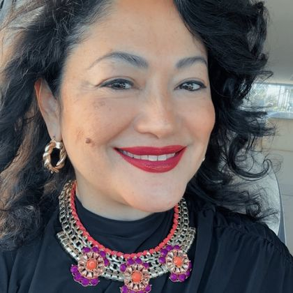
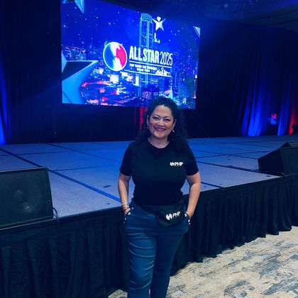
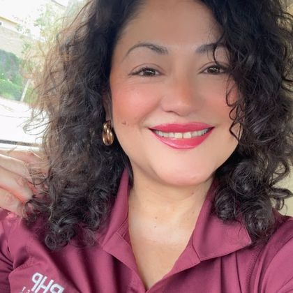

Tell it once, in her own words, on a pinned post. It is the reason, not a sales story.
Your strategic operating kit
Put yourself first
Peace of mind follows
A focused position, finished Instagram and LinkedIn profiles, and a practical plan for becoming the advisor Latina single moms in the Inland Empire call before the emergency, not after it.
One position
One character
Two profiles, ready to paste
Thirty days of direction
One portable AI pack
Your Strategy
Be the advisor who starts with the mom, not the policy
Positioning statement
Jenina helps Latina single moms who run the household alone build financial security and peace of mind for the family, starting with the mom herself.
Most agents lead with the policy and the premium. Jenina leads with the mom who is carrying the household alone and what she needs to feel secure now. Her authority comes from sitting with the family until the plan is theirs.
- Category
- Life insurance, retirement, and living trust advisor
- Distinctive idea
- Put yourself first
- Founder role
- Jenina is the brand. Team, agency, and carriers stay behind her
The Focus Star
Five decisions that keep the brand coherent
-
Product
Financial security and peace of mind for the family.
The product is the security a mom feels now, not a policy. Life insurance with living benefits, retirement plans, and living trusts are the tools.
-
People
Latina single moms running the household alone.
Persona: The mom carrying it all alone. Kids and bills on one income, stable enough to care, and nobody has ever sat with her on the money.
-
Purpose
End living one emergency away from collapse.
One death, one illness, or one lost job should never take a family's footing away. The plan exists so the day after is survivable.
-
Promise
Put yourself first.
Brand DNA: Her first. Not selfish. A mom's own security is what lets her take care of everyone else.
-
Personality
Approachable and caring. Latina, classy, quiet luxury. Classic, feminine, serious.
Warm in the room, precise on the numbers. Tasteful, never flashy. Faith and family live in her voice, not in her pitch.
Point of view
You cannot take care of your family if nobody is taking care of you.
01Security is a feeling first. The paperwork is how you keep it.
02A single mom does not need a partner to have a plan. She needs someone who sits with her until the plan is hers.
03Latino families talk about everything except death and money. Talk about both, kindly and out loud.
Proof bank
What makes the position believable
Use in the bio, the About section, and every first conversation.
Use in posts about policy reviews. Never name the carrier or the figure.
Use as dated events with photos. Announce the next one, then post the answers.
Client stories, numbers, and awards go public only once Jenina supplies them and is happy with the exact words.
Your Identity
Sound warm, look classic, stay precise
Personality
One character on every channel
Approachable and caring. Latina, classy, quiet luxury. Classic, feminine, serious.
This is the character every post, photo, and reply keeps. A mom should feel she could call Jenina tonight, and also that Jenina would know exactly what to do.
She listens before she explains, then explains in plain words. Faith and family live in her voice, not in her pitch.
Short sentences, real situations, one idea at a time. Serious subjects without a scary tone.
Tasteful dress and earrings, real light, real places. Quiet luxury that still feels like someone you know.
Brand archetype
The caregiver with standards
The mix comes from the eight words Jenina chose for her brand: caring, authoritative, confident, desirable, knowledgeable, loyal, trustworthy, safe.
- Caregiver leads. Protection for the family, starting with the mom. This is the position itself.
- Friend and Ruler carry it. Friend makes her easy to call: loyal, relatable, English y Español. Ruler gives her standards: order, confidence, a plan that holds.
- Sage, Innocent, and Lover support. Sage is the precision on the numbers. Innocent is the honesty that makes her safe. Lover is the touch of class in how she shows up.
- Hero stays a trace. A little resilience in the voice, never a battle cry.
What she is not: a provocateur, a comedian, or a magician. No shock, no jokes about money, no promises that sound like magic.
Voice principles
Sound like the person who finally sat down with her
01
Warm first, precise second
Make the mom feel seen before making anything feel urgent.
You are already doing the hard part. Let me show you the part that makes it hold.
02
The mom is the hero
Jenina is the person who sits with her. The result belongs to the mom.
We looked at what she already had, found two gaps, and closed them in one afternoon.
03
Plain language for serious things
One idea per sentence. Explain every tool by what it does for her family.
A living trust means the house goes to the kids without a court deciding.
04
Quiet confidence, no sales voice
Close with one calm question or one small action.
If you have ever wondered who would step in, that is the conversation.
How it looks
Real photos, quiet luxury, nothing flashy
Where the work happens: a client's living room, a coffee shop, a workshop room. Real places with real light.
Tasteful dress or blazer, earrings, clean lines. Classy Latina, not corporate, not casual.
Warm and engaged, with the person, not posing for the camera. A soft smile, no stiff headshot.
No stock families, no quote cards in a template font, no neon, no urgency graphics. Colors, type, and a logo are not decided here. Until they are, the photos and the restraint carry the look.
Your Instagram
Make the strategy visible before she scrolls past
Jenina Ramirez | Financial Security for Moms
Put yourself first.
Financial security for Latina single moms
Life insurance, retirement, living trusts
Inland Empire | English y Español
Start here
Moms first
Retirement
Living trusts
Workshops



Bio
Put yourself first.
Financial security for Latina single moms
Life insurance, retirement, living trusts
Inland Empire | English y Español
Put yourself first.
Financial security for Latina single moms
Life insurance, retirement, living trusts
Inland Empire | English y Español
Pinned post one
Ready to paste
Put yourself first. I know how that sounds to a mom who puts herself last every single day.
Here is what I mean. If something happened to you next month, who would step in, and what would they have to work with? If you are not sure, nobody has sat with you on the money yet. That is the conversation I have with moms who run the household alone, in your home or a coffee shop, in English or Spanish.
Your security is what keeps everyone else covered. Message me the word FIRST and I will tell you what to bring.
Pinned posts
Proof in the order a mom needs it
- 01Put yourself firstPosition
The point of view in her words. Why the mom's own security comes first and what changes when it does.
- 02The whyOrigin
The story behind the work, told once and told kindly. No names, no drama, one lesson.
- 03Five questions every mom running the house alone should be able to answerLead asset
The checklist that turns the position into something useful. The lead asset for the next thirty days.
Highlights
- Start here
- Moms first
- Retirement
- Living trusts
- Workshops
Call to action
Message me the word FIRST and I will tell you what to bring.
Your LinkedIn
Say the same thing to the people who refer her
Jenina Ramirez
Financial security for Latina single moms | Life insurance with living benefits, retirement plans, living trusts | Inland Empire
Inland Empire, CaliforniaHeadline
Financial security for Latina single moms | Life insurance with living benefits, retirement plans, living trusts | Inland Empire
Financial security for Latina single moms | Life insurance with living benefits, retirement plans, living trusts | Inland EmpireAbout
Ready to paste
I help Latina single moms who run the household alone build financial security and peace of mind for the family, starting with the mom herself.
I meet every client in her home or a coffee shop, in English or Spanish, and I stay until the plan is hers. Life insurance with living benefits, retirement planning, and living trusts are the tools. The feeling that one bad week will not take everything down is the product.
I also host community workshops across the Inland Empire: first-time homebuyer nights, policy reviews for teachers, and women's finance conversations.
If nobody has ever sat with you on the money, message me the word FIRST.
Featured
Proof in the order a referrer needs it
- 01Put yourself firstPosition
The position post, reposted from Instagram in the same words. The first thing a teacher, a realtor, or a pastor sees.
- 02Five questions every mom running the house alone should be able to answerLead asset
The checklist as a document. The thing people forward.
- 03The next workshopCommunity proof
Date, place, topic, and how to bring someone. Replace it after every event.
Priority skills
- Life insurance
- Living benefits
- Retirement planning
- Living trusts
- Financial education
- Spanish
Call to action
Message me the word FIRST and I will tell you what to bring.
Your 30-Day Plan
Start ten real conversations, then fill the room
The objective
Start ten real conversations with single moms who have never sat with anyone on their money, and fill the next workshop with them. Primary signal: ten first conversations booked from Instagram, LinkedIn, workshops, or referrals in thirty days.Rebuild the profile around one idea
Update the name field, the bio, the highlights, and the three pinned posts so the position is clear before anyone reads a caption.
Book and fill the next workshop
Set a date for a money night for moms, name the five questions, and invite the people who already gather moms.
Activate warm trust
Send ten short messages to people who fit the audience or know someone who does. Ask one question. Make replying easy.
Four-week sequence
Do these in order
-
Week01Profile + point of view
Set the position
Update the Instagram and LinkedIn profiles. Publish the three pinned posts. Send the first five warm messages.
-
Week02Proof + listening
Prove it with content
Publish one post per territory. Announce the workshop date and ask five moms which of the five questions they cannot answer yet.
-
Week03Workshop + service
Host the room
Run the workshop with a host who already gathers moms. Collect every question asked. Offer one free policy review to a teacher or single mom who attended.
-
Week04Answers + outreach
Turn attention into conversations
Post the answers to the workshop questions. Send the last five warm messages. Review the ten conversations and note what each mom asked first.
Three content territories
Nine ideas, one coherent reputation
Put Yourself First
- The oxygen mask, in plain words, for a mom who puts herself last
- What changes in a household the month the mom is covered
- The first question Jenina asks in every first conversation
One Emergency Away
- What one emergency actually costs a family on one income
- Three small moves that make a bad month survivable
- A real situation, told with permission and without names
Things We Do Not Talk About
- What happens to the house when there is no trust
- Why Latino families avoid the money conversation, and how to start it
- How to ask your own mother what she has planned
Five plays
Put the position to work beyond the feed
Campaign
Five questions every mom running the house alone should be able to answer
A short checklist that turns the position into something useful. Each question becomes one post, one story, and one reason to message the word FIRST.
- Audience
- Single moms on one income
- Next step
- A first conversation, in her home or a coffee shop
- Measure
- Replies with the word FIRST
PR
The money conversation Latino families skip
Offer local and Spanish-language community media a practical perspective on why families avoid talking about death and money, and the three questions that start the conversation. Lead with the questions, not with products.
- Targets
- Inland Empire community outlets and Spanish-language radio
- Have ready
- Workshop dates and one client story told with permission
- Measure
- Interview requests and workshop sign-ups
Collaboration
Money night for moms
Co-host a ninety-minute evening with someone who already gathers moms: a school parent group, a church group, or a women's business circle. The host brings the room. Jenina brings the five questions.
- Partner
- A host with the same moms in the room
- Format
- Ninety minutes plus one handout
- Measure
- First conversations booked that night
Pro bono
One policy review, no strings
Offer one free review of an existing policy to a teacher or single mom each month. Read it together, name the gaps, and share the lesson afterward with permission and without names.
- Rule
- One review, one family, one follow-up
- Value
- Real service and a grounded story
- Measure
- Gaps closed and referrals that follow
Email + outreach
Ten people who already trust her
Message ten people who fit the audience or know someone who does. Name the new focus in one sentence, ask one question, and make replying easy. In her own words, from her own phone.
- Audience
- Clients, workshop attendees, and friends of moms
- Asset
- The five questions checklist
- Measure
- Three first conversations from ten messages
Use With AI
Take your strategy into any language model without starting again
The Markdown pack keeps your position, voice, proof, and factual boundaries together. Paste it at the start of a new conversation, then add one of the prompts below.
- Format
- Plain Markdown
- Works with
- ChatGPT, Claude, Gemini, Copilot, and other LLMs
- Includes
- Identity, instructions, context, examples, boundaries, and prompts
Loading your context pack...
Starter prompts
Choose the job. Keep the strategy attached
01
Write an Instagram post
Using the brand context above, write one Instagram post in Jenina's voice for the Put Yourself First territory. Audience: a Latina single mom who runs the household on one income. Open with her situation, give one plain-language idea, and close with "Message me the word FIRST." Under 120 words, no emoji in the body, at most three hashtags at the end.
02
Plan a month of posts
Using the brand context above, draft a four-week Instagram plan with three posts per week. Rotate the three content territories, mark which posts support the next workshop, and give each post a one-line angle and a format (photo, talking video, carousel, or story). Keep every angle inside the factual boundaries.
03
Outline the workshop
Using the brand context above, outline a ninety-minute community workshop for single moms titled "Five questions every mom running the house alone should be able to answer." Give the five questions, what Jenina covers for each, the one handout, and how attendees book a first conversation. No product pitch inside the workshop.
04
Shape a collaboration
Using the brand context above, write a short message to a local host who already gathers moms (a school parent group, a church group, a women's business circle) proposing a money night for moms. Explain what Jenina covers, what the host provides, and why it is useful for their group. Plain, warm, no hard sell.
05
Build a campaign brief
Using the brand context above, plan a two-week campaign around the "Five questions" checklist: the checklist itself, three posts that each unpack one question, one story sequence, and one follow-up message for people who reply with the word FIRST. Keep the tone inside the voice principles.
06
Prepare warm outreach
Using the brand context above, write a short message Jenina can send to ten people she already knows who fit the audience or know someone who does. Name what she now focuses on, ask one question, and make replying easy. Under 80 words.